library(tidyverse)
library(corrplot)Packages
Some Sources:
https://r4ds.had.co.nz/exploratory-data-analysis.html#cat-cont
Data Import
data <- read_csv('./data/surveydata.csv')
-- Column specification --------------------------------------------------------
cols(
.default = col_double()
)
i Use `spec()` for the full column specifications.data <- data %>% mutate(across(-c(ResponseID, Age), factor))
data# A tibble: 122 x 51
ResponseID Age Race Rel_stat Gen_id Geographic Acad_stat Sex_ori
<dbl> <dbl> <fct> <fct> <fct> <fct> <fct> <fct>
1 57260650 20 4 1 2 3 3 1
2 57262669 NA 7 1 2 1 3 1
3 57262726 NA 4 1 2 2 2 1
4 57263988 18 4 1 2 2 1 3
5 57285198 18 4 1 2 2 1 1
6 57294490 NA 3 1 2 1 1 1
7 57299745 27 2 2 2 3 5 1
8 57344567 19 2 1 3 3 2 4
9 57353650 18 2 1 2 1 1 1
10 58055650 18 4 1 2 1 1 2
# ... with 112 more rows, and 43 more variables: Or_VagAnal <fct>,
# Age_1stSex <fct>, SexPar_PYr <fct>, CU_lastSex <fct>, SubUse_lastSex <fct>,
# CUfreq_Osex <fct>, CUfreq_Vsex <fct>, CUfreq_Asex <fct>, SEXpar_P6mo <fct>,
# CU_BFGF <fct>, CUmultisex_oral <fct>, CUmultisex_vag <fct>,
# CUmultisex_anal <fct>, CU_OsexFWB <fct>, CU_VsexFWB <fct>,
# CU_AsexFWB <fct>, CU_OsexHkup <fct>, CU_VsexHkup <fct>, CU_AsexHkup <fct>,
# Respon_CU <fct>, Discuss_CU <fct>, CU_uncomf <fct>,
# C_break_slips_unrely <fct>, C_pleasant <fct>, C_dontprotectSTI <fct>,
# CU_preventspots <fct>, Prefer_planB <fct>, partnerCU_Noshame <fct>,
# CU_intentions <fct>, DoNotlike_C <fct>, Noshame_askCU <fct>,
# CU_interuptFlow <fct>, CU_prevPreg0STIs <fct>, raw_sexBetr <fct>,
# Preg_STI_worry <fct>, STI_HIVtest <fct>, Pos_STIHIV <fct>,
# Freq_STItest <fct>, Last_STItest_A <fct>, UTHC_aware <fct>,
# UTHC_serv <fct>, TOT_Sexpart <fct>, SexPart_APP <fct>Type of Sex vs. Condom Use vs. Substance Use
data %>% count(SubUse_lastSex, CU_lastSex)# A tibble: 5 x 3
SubUse_lastSex CU_lastSex n
<fct> <fct> <int>
1 0 0 34
2 0 1 45
3 1 0 5
4 1 1 37
5 1 <NA> 1data %>%
ggplot()+
geom_bar(aes(x= Or_VagAnal), color = 'white')+
facet_grid(CU_lastSex ~ SubUse_lastSex)+
theme_bw()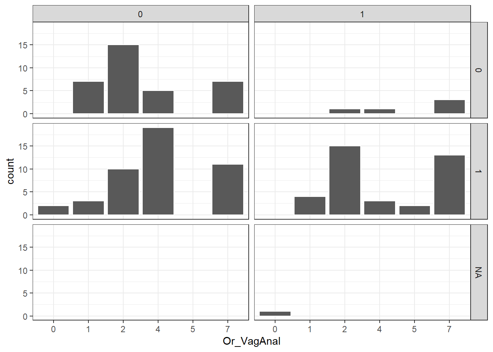
STI vs. Condom
data %>% count(CU_lastSex, Pos_STIHIV)# A tibble: 9 x 3
CU_lastSex Pos_STIHIV n
<fct> <fct> <int>
1 0 1 1
2 0 2 2
3 0 3 3
4 0 4 33
5 1 1 6
6 1 2 12
7 1 3 11
8 1 4 53
9 <NA> 2 1data %>%
ggplot()+
geom_bar(aes(x = Pos_STIHIV))+
facet_wrap(~ CU_lastSex)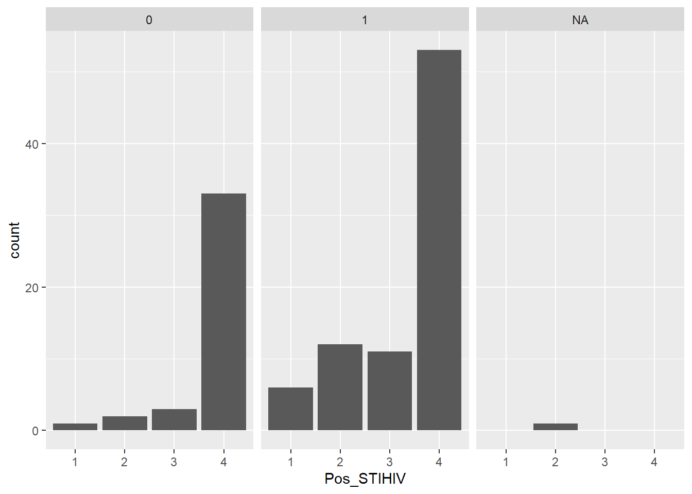
Prefer Plan B vs. Condom
data %>% count(Prefer_planB, CU_lastSex)# A tibble: 7 x 3
Prefer_planB CU_lastSex n
<fct> <fct> <int>
1 0 0 15
2 0 1 36
3 1 0 22
4 1 1 44
5 1 <NA> 1
6 <NA> 0 2
7 <NA> 1 2data %>%
# count(Prefer_planB, CU_lastSex) %>%
ggplot()+
geom_bar(aes(x= Prefer_planB), color = 'white')+
facet_wrap(~ CU_lastSex)+
theme_bw()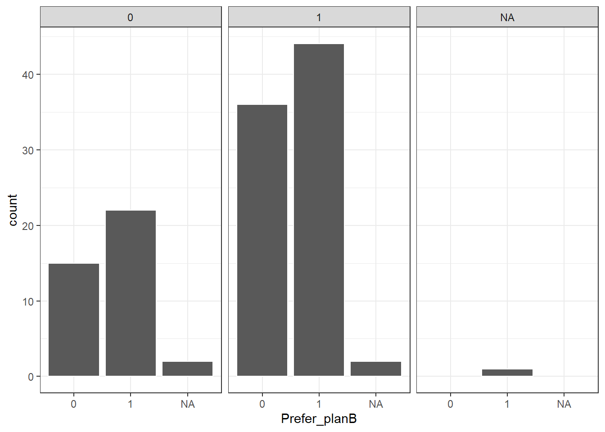
data %>% count(TOT_Sexpart, SexPart_APP)# A tibble: 22 x 3
TOT_Sexpart SexPart_APP n
<fct> <fct> <int>
1 1 0 14
2 1 1 7
3 1 <NA> 2
4 2 0 9
5 2 1 11
6 2 <NA> 1
7 3 0 3
8 3 1 17
9 3 <NA> 9
10 4 0 1
# ... with 12 more rowsdata %>%
# count(Prefer_planB, CU_lastSex) %>%
ggplot()+
geom_bar(aes(x= SexPart_APP), color = 'white')+
facet_wrap(~ TOT_Sexpart)+
theme_bw()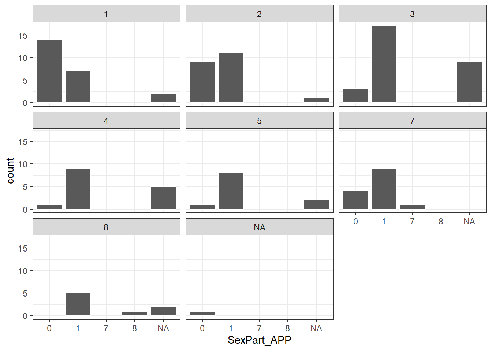
UT Services vs Sex Partners vs. App Sex Partners
data %>%
count(UTHC_serv, SexPart_APP, TOT_Sexpart)# A tibble: 35 x 4
UTHC_serv SexPart_APP TOT_Sexpart n
<fct> <fct> <fct> <int>
1 0 0 1 10
2 0 0 2 7
3 0 0 3 3
4 0 0 5 1
5 0 0 7 3
6 0 0 <NA> 1
7 0 1 1 3
8 0 1 2 1
9 0 1 3 3
10 0 1 4 4
# ... with 25 more rowsdata %>%
ggplot()+
geom_bar(aes(x= UTHC_serv), color = 'white')+
facet_grid(SexPart_APP ~ TOT_Sexpart)+
theme_bw()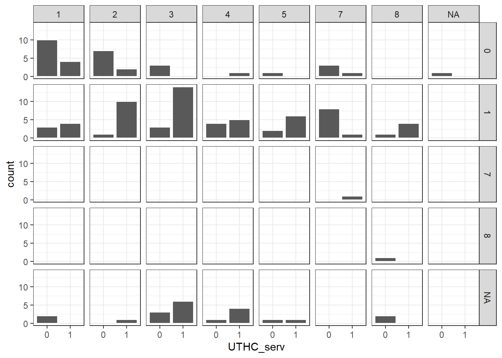
UT Health Services vs. Sexual Partners on App
data %>%
mutate(sexpartapp = case_when(SexPart_APP == '0' ~ '0',
SexPart_APP == '1' ~ '1',
SexPart_APP == '7' | SexPart_APP == '8' ~ '2+')
) %>%
na.omit() %>%
count(UTHC_serv, sexpartapp)# A tibble: 6 x 3
UTHC_serv sexpartapp n
<fct> <chr> <int>
1 0 0 18
2 0 1 21
3 0 2+ 1
4 1 0 5
5 1 1 34
6 1 2+ 1hcapp <- data %>%
count(UTHC_serv, SexPart_APP) %>%
na.omit() %>%
mutate(sexpartapp = case_when(SexPart_APP == '0' ~ '0',
SexPart_APP == '1' ~ '1',
SexPart_APP == '7' | SexPart_APP == '8' ~ '2+')
) %>%
select(-SexPart_APP) %>%
ggplot(aes(x= UTHC_serv, y = n, fill = sexpartapp))+
geom_bar(stat = 'identity', color = 'white', position = 'dodge')+
geom_text(aes(label = n), vjust = -1, colour = "black", position = position_dodge(.9))+
#facet_grid(SexPart_APP ~ TOT_Sexpart)+
#geom_point(aes(x = 2014, y = 440000), color = 'gold', fill = 'gold', shape = 23, size = 5)+
#geom_text(aes(x = 2000, y = 447000, label = '2505 Bird'))+
labs(title = 'Usage of UTA Health Services by Number of Sexual Partners Met Through Apps',
x = '',
y = 'Count',
fill = '# Sexual Partners \n Through Apps')+
scale_y_continuous(limits = c(0,70), breaks = seq(0,70, by = 5))+
scale_x_discrete(labels = c('0' = 'Does Not Use UTA Health Service', '1' = 'Uses UTA Health Service') )+
theme_minimal()+
theme(plot.title = element_text(size = 12, face = 'bold'),
legend.position = 'right',
legend.text = element_text(size = 12),
#legend.title = element_blank(),
axis.title = element_text(size = 12),
axis.text = element_text(size = 12),
axis.text.x = element_text(angle = 5),
#axis.text.y = element_text(angle = 15),
#axis.title.y = element_blank(),
#strip.text.x = element_text(size = 8, face = 'bold'),
#legend.key.width = unit(0.1, 'in'),
#legend.key.height = unit(0.1,'in'),
#legend.margin = margin(t = 0, unit = 'cm'),
#plot.margin = unit(x = c(0.5,0.5,0.5,0.5), units = 'mm'),
#axis.ticks.y = element_blank()
)
hcapp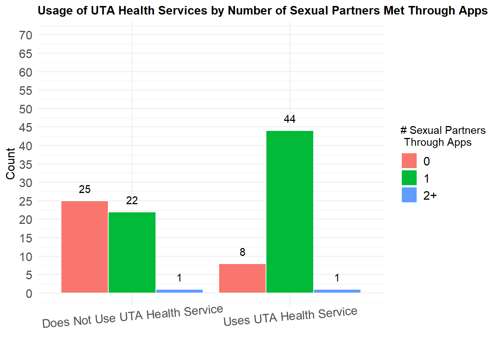
UT Health Services vs. Total Partners on App
data %>%
mutate(TOT_Sexpart = as.numeric(TOT_Sexpart)) %>%
mutate(sexparttot = case_when(TOT_Sexpart == '0' ~ '0',
TOT_Sexpart == '1' ~ '1',
TOT_Sexpart >= 1 ~ '2+')
) %>%
count(UTHC_serv, sexparttot) %>%
na.omit() # A tibble: 4 x 3
UTHC_serv sexparttot n
<fct> <chr> <int>
1 0 1 15
2 0 2+ 41
3 1 1 8
4 1 2+ 57hctot <- data %>%
mutate(TOT_Sexpart = as.numeric(TOT_Sexpart)) %>%
mutate(sexparttot = case_when(TOT_Sexpart == '0' ~ '0',
TOT_Sexpart == '1' ~ '1',
TOT_Sexpart >= 1 ~ '2+')
) %>%
count(UTHC_serv, sexparttot) %>%
na.omit() %>%
ggplot(aes(x= UTHC_serv, y = n, fill = sexparttot))+
geom_bar(stat = 'identity', color = 'white', position = 'dodge')+
geom_text(aes(label = n), vjust = -1, colour = "black", position = position_dodge(.9))+
#facet_wrap(~ TOT_Sexpart)+
#geom_point(aes(x = 2014, y = 440000), color = 'gold', fill = 'gold', shape = 23, size = 5)+
#geom_text(aes(x = 2000, y = 447000, label = '2505 Bird'))+
labs(title = 'Usage of UTA Health Services by Total Number of Sexual Partners',
x = '',
y = 'Count',
fill = 'Total # of \n Sexual Partners')+
scale_y_continuous(limits = c(0,70), breaks = seq(0,70, by = 5))+
scale_x_discrete(labels = c('0' = 'Does Not Use UTA Health Service', '1' = 'Uses UTA Health Service') )+
theme_minimal()+
theme(plot.title = element_text(size = 12, face = 'bold'),
legend.position = 'right',
legend.text = element_text(size = 12),
#legend.title = element_blank(),
axis.title = element_text(size = 12),
axis.text = element_text(size = 12),
axis.text.x = element_text(angle = 5),
#axis.text.y = element_text(angle = 15),
#axis.title.y = element_blank(),
#strip.text.x = element_text(size = 8, face = 'bold'),
#legend.key.width = unit(0.1, 'in'),
#legend.key.height = unit(0.1,'in'),
#legend.margin = margin(t = 0, unit = 'cm'),
#plot.margin = unit(x = c(0.5,0.5,0.5,0.5), units = 'mm'),
#axis.ticks.y = element_blank()
)
hctot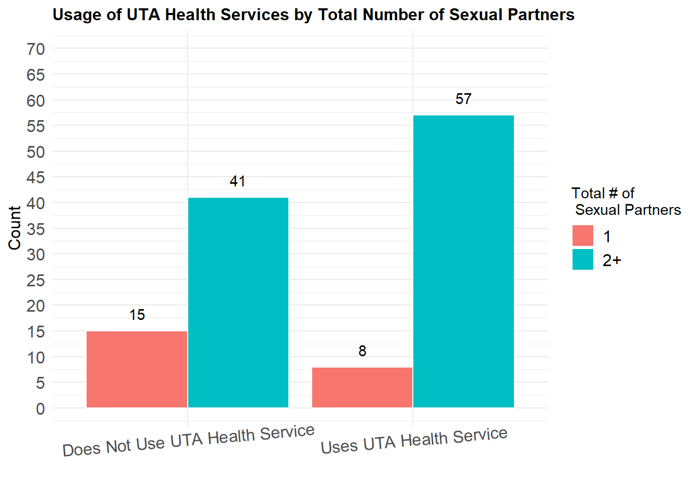
Condom Use vs. Sexual Partners
Condom Use vs. Total Sexual Partners
data %>%
mutate(TOT_Sexpart = as.numeric(TOT_Sexpart)) %>%
mutate(sexparttot = case_when(TOT_Sexpart == '0' ~ '0',
TOT_Sexpart == '1' ~ '1',
TOT_Sexpart >= 1 ~ '2+')
) %>%
count(CU_lastSex, sexparttot) %>%
na.omit() # A tibble: 4 x 3
CU_lastSex sexparttot n
<fct> <chr> <int>
1 0 1 7
2 0 2+ 32
3 1 1 16
4 1 2+ 65cutot <- data %>%
mutate(TOT_Sexpart = as.numeric(TOT_Sexpart)) %>%
mutate(sexparttot = case_when(TOT_Sexpart == '0' ~ '0',
TOT_Sexpart == '1' ~ '1',
TOT_Sexpart >= 1 ~ '2+')
) %>%
count(CU_lastSex, sexparttot) %>%
na.omit() %>%
ggplot(aes(x= CU_lastSex, y = n, fill = sexparttot))+
geom_bar(stat = 'identity', color = 'white', position = 'dodge')+
geom_text(aes(label = n), vjust = -1, colour = "black", position = position_dodge(.9))+
#facet_wrap(~ TOT_Sexpart)+
#geom_point(aes(x = 2014, y = 440000), color = 'gold', fill = 'gold', shape = 23, size = 5)+
#geom_text(aes(x = 2000, y = 447000, label = '2505 Bird'))+
labs(title = 'Condom Usage by Total Number of Sexual Partners',
x = '',
y = 'Count',
fill = 'Total # of \n Sexual Partners')+
scale_y_continuous(limits = c(0,70), breaks = seq(0,70, by = 5))+
scale_x_discrete(labels = c('0' = 'Did Not Use Condom \n Last Sexual Encounter', '1' = 'Used Condom \n Last Sexual Encounter') )+
theme_minimal()+
theme(plot.title = element_text(size = 12, face = 'bold'),
legend.position = 'right',
legend.text = element_text(size = 12),
#legend.title = element_blank(),
axis.title = element_text(size = 12),
axis.text = element_text(size = 12),
axis.text.x = element_text(angle = 5),
#axis.text.y = element_text(angle = 15),
#axis.title.y = element_blank(),
#strip.text.x = element_text(size = 8, face = 'bold'),
#legend.key.width = unit(0.1, 'in'),
#legend.key.height = unit(0.1,'in'),
#legend.margin = margin(t = 0, unit = 'cm'),
#plot.margin = unit(x = c(0.5,0.5,0.5,0.5), units = 'mm'),
#axis.ticks.y = element_blank()
)
cutot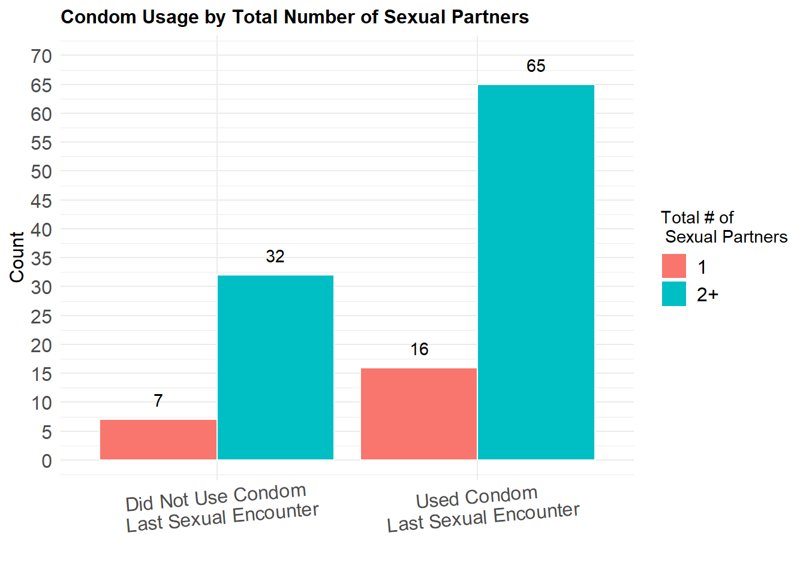
Condom Use vs. App Sexual Parnters
data %>%
mutate(sexpartapp = case_when(SexPart_APP == '0' ~ '0',
SexPart_APP == '1' ~ '1',
SexPart_APP == '7' | SexPart_APP == '8' ~ '2+')
) %>%
count(CU_lastSex, sexpartapp) %>%
na.omit()# A tibble: 5 x 3
CU_lastSex sexpartapp n
<fct> <chr> <int>
1 0 0 12
2 0 1 24
3 1 0 21
4 1 1 42
5 1 2+ 2cuapp <- data %>%
mutate(sexpartapp = case_when(SexPart_APP == '0' ~ '0',
SexPart_APP == '1' ~ '1',
SexPart_APP == '7' | SexPart_APP == '8' ~ '2+')
) %>%
count(CU_lastSex, sexpartapp) %>%
na.omit() %>%
add_row(CU_lastSex = '0', sexpartapp = '2+', n = 0) %>%
ggplot(aes(x= CU_lastSex, y = n, fill = sexpartapp))+
geom_bar(stat = 'identity', color = 'white', position = 'dodge')+
geom_text(aes(label = n), vjust = -1, colour = "black", position = position_dodge(.9))+
#facet_wrap(~ TOT_Sexpart)+
#geom_point(aes(x = 2014, y = 440000), color = 'gold', fill = 'gold', shape = 23, size = 5)+
#geom_text(aes(x = 2000, y = 447000, label = '2505 Bird'))+
labs(title = 'Condom Usage by Number of Sexual Partners Met Through Apps',
x = '',
y = 'Count',
fill = '# of Sexual Partners \n Met Through Apps')+
scale_y_continuous(limits = c(0,70), breaks = seq(0,70, by = 5))+
scale_x_discrete(labels = c('0' = 'Did Not Use Condom \n Last Sexual Encounter', '1' = 'Used Condom \n Last Sexual Encounter') )+
theme_minimal()+
theme(plot.title = element_text(size = 12, face = 'bold'),
legend.position = 'right',
legend.text = element_text(size = 12),
#legend.title = element_blank(),
axis.title = element_text(size = 12),
axis.text = element_text(size = 12),
axis.text.x = element_text(angle = 5),
#axis.text.y = element_text(angle = 15),
#axis.title.y = element_blank(),
#strip.text.x = element_text(size = 8, face = 'bold'),
#legend.key.width = unit(0.1, 'in'),
#legend.key.height = unit(0.1,'in'),
#legend.margin = margin(t = 0, unit = 'cm'),
#plot.margin = unit(x = c(0.5,0.5,0.5,0.5), units = 'mm'),
#axis.ticks.y = element_blank()
)
cuapp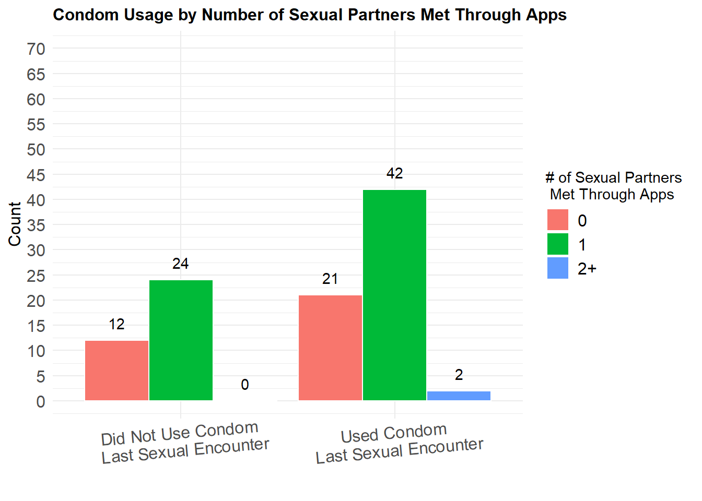
Graphs
hcapphctotcuappcutotggsave(plot = hcapp, filename = './results/figures/healthserveapp.png', dpi = 320)Saving 7 x 5 in imageggsave(plot = hctot, filename = './results/figures/healthservetotal.png', dpi = 320)Saving 7 x 5 in imageggsave(plot = cuapp, filename = './results/figures/condomuseapp.png', dpi = 320)Saving 7 x 5 in imageggsave(plot = cutot, filename = './results/figures/condomusetotal.png', dpi = 320)Saving 7 x 5 in imageChi Squared Tests: Condom Use vs. App Sexual Partners
data %>%
mutate(sexpartapp = case_when(SexPart_APP == '0' ~ '0',
SexPart_APP == '1' ~ '1',
SexPart_APP == '7' | SexPart_APP == '8' ~ '2+')
) %>%
count(CU_lastSex, sexpartapp) %>% na.omit() %>% mutate(CU_lastSex = as.integer(CU_lastSex)-1)# A tibble: 5 x 3
CU_lastSex sexpartapp n
<dbl> <chr> <int>
1 0 0 12
2 0 1 24
3 1 0 21
4 1 1 42
5 1 2+ 2data_cuapp <- data %>%
mutate(sexpartapp = case_when(SexPart_APP == '0' ~ '0',
SexPart_APP == '1' ~ '1',
SexPart_APP == '7' | SexPart_APP == '8' ~ '2+')
) %>%
count(CU_lastSex, sexpartapp) %>% na.omit() %>%
pivot_wider(names_from = sexpartapp, values_from = n) %>%
replace(is.na(.),0) %>%
column_to_rownames(var = 'CU_lastSex')
data_cuapp1 <- data %>%
count(CU_lastSex, SexPart_APP) %>% na.omit() %>%
pivot_wider(names_from = SexPart_APP, values_from = n) %>%
replace(is.na(.),0) %>%
column_to_rownames(var = 'CU_lastSex')
data_cuapp 0 1 2+
0 12 24 0
1 21 42 2data_cuapp1 0 1 7 8
0 12 24 0 0
1 21 42 1 1chisq_cuapp <- chisq.test(data_cuapp)Warning in chisq.test(data_cuapp): Chi-squared approximation may be incorrectchisq_cuapp1 <- chisq.test(data_cuapp1)Warning in chisq.test(data_cuapp1): Chi-squared approximation may be incorrectchisq_cuapp
Pearson's Chi-squared test
data: data_cuapp
X-squared = 1.1301, df = 2, p-value = 0.5683chisq_cuapp$observed 0 1 2+
0 12 24 0
1 21 42 2chisq_cuapp$expected %>% round(2) 0 1 2+
0 11.76 23.52 0.71
1 21.24 42.48 1.29print('Crtical Value of 95% Chi Square with 2 DOF:')[1] "Crtical Value of 95% Chi Square with 2 DOF:"qchisq(p = 0.975, df = 2)[1] 7.377759The chisq test returns:
Statistic: the value the chi-squared test statistic. parameter: the degrees of freedom p.value: the p-value of the test observed: the observed count expected: the expected count
P value less than 0.05 and a chi-squared value higher than the critical value reject null hypothesis that there is no relationship.
Sources:
http://www.sthda.com/english/wiki/chi-square-goodness-of-fit-test-in-r http://www.sthda.com/english/wiki/wiki.php?title=chi-square-test-of-independence-in-r
corrplot(chisq_cuapp$residuals, is.cor = FALSE)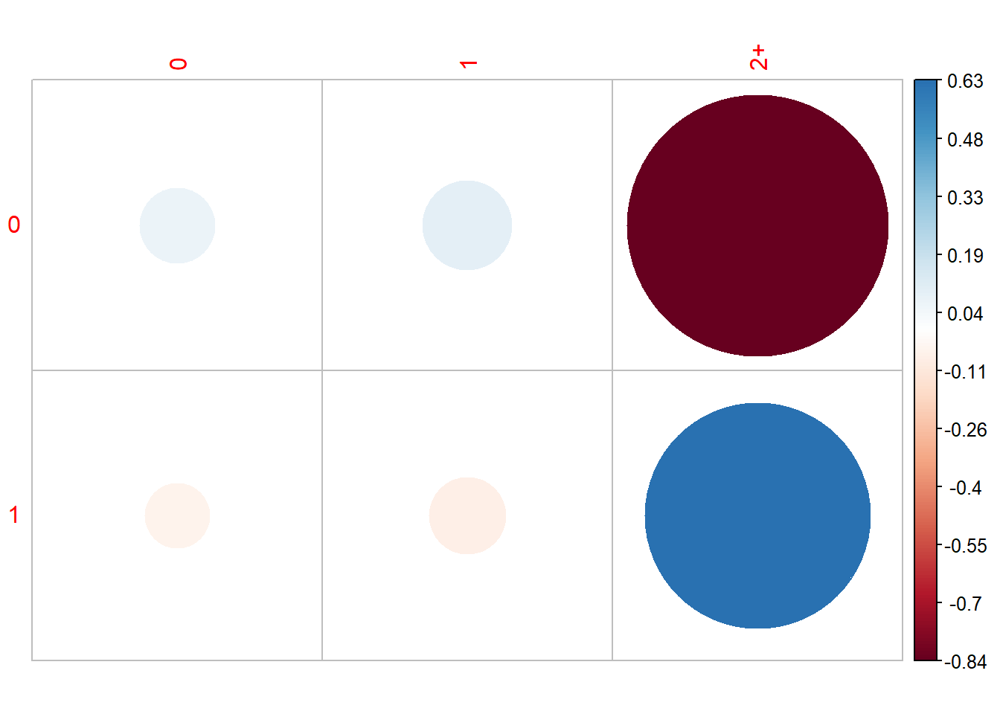
corrplot(chisq_cuapp1$residuals, is.cor = FALSE)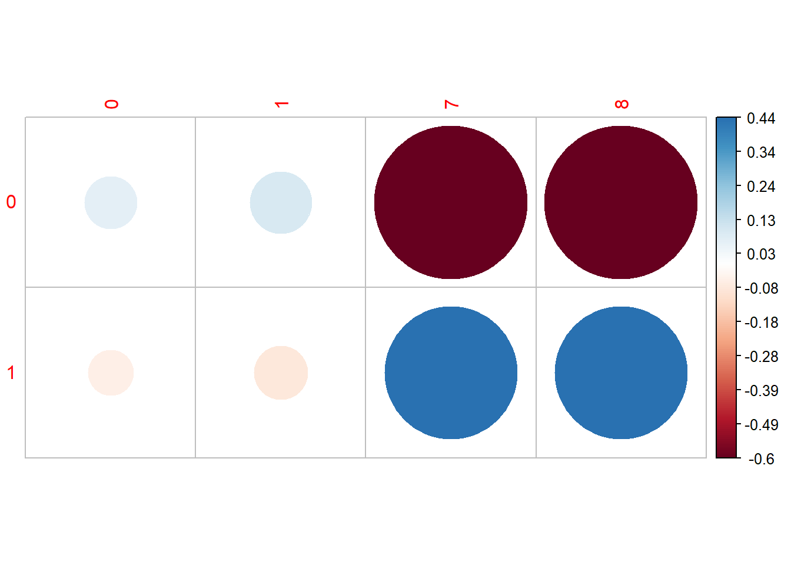
Positive residuals are in blue.
Positive values in cells specify an attraction (positive association) between the corresponding row and column variables.
Negative residuals are in red.
This implies a repulsion (negative association) between the corresponding row and column variables.
Z Proportion and Chi Squared Tests: UT Health Services vs. Total Partners
Note that, for 2 x 2 table, the standard chi-square test in chisq.test() is exactly equivalent to prop.test() but it works with data in matrix form.
Source:
http://www.sthda.com/english/wiki/two-proportions-z-test-in-r
data_hctot <- data %>%
mutate(TOT_Sexpart = as.numeric(TOT_Sexpart)) %>%
mutate(sexparttot = case_when(TOT_Sexpart == '0' ~ '0',
TOT_Sexpart == '1' ~ '1',
TOT_Sexpart >= 1 ~ '2+')
) %>%
count(UTHC_serv, sexparttot) %>%
na.omit() %>%
pivot_wider(names_from = sexparttot, values_from = n) %>%
column_to_rownames(var = 'UTHC_serv')
data_hctot 1 2+
0 15 41
1 8 57Shows that the proportion test for a 2 x 2 table is the same as a Pearson Chi Squared Test
prop.test(as.matrix(data_hctot), alternative = "two.sided",
correct = TRUE)
2-sample test for equality of proportions with continuity correction
data: as.matrix(data_hctot)
X-squared = 3.2095, df = 1, p-value = 0.07321
alternative hypothesis: two.sided
95 percent confidence interval:
-0.01266383 0.30222427
sample estimates:
prop 1 prop 2
0.2678571 0.1230769 chisq.test(data_hctot)
Pearson's Chi-squared test with Yates' continuity correction
data: data_hctot
X-squared = 3.2095, df = 1, p-value = 0.07321Type of Sex vs. Race, Age, and More EDA Plots
data %>%
count(Or_VagAnal, Race)# A tibble: 27 x 3
Or_VagAnal Race n
<fct> <fct> <int>
1 0 2 1
2 0 4 1
3 0 7 1
4 1 1 2
5 1 2 3
6 1 3 3
7 1 4 2
8 1 5 1
9 1 7 3
10 2 1 8
# ... with 17 more rowsdata %>%
ggplot(aes(x = Age, y = ..density..))+
geom_freqpoly(aes( color = Or_VagAnal), binwidth = 5)Warning: Removed 9 rows containing non-finite values (stat_bin).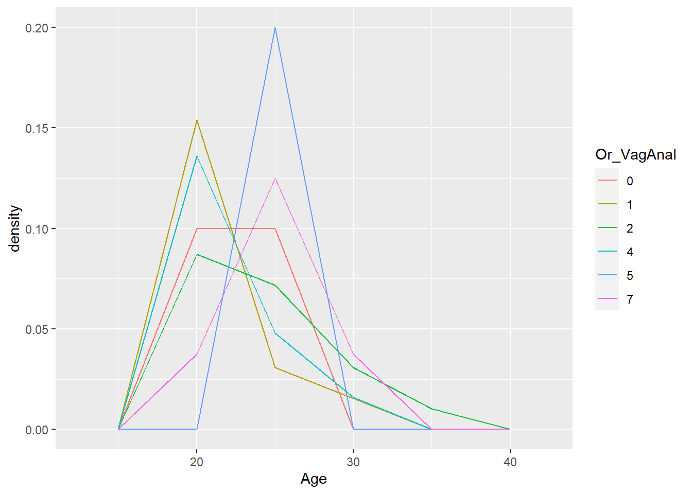
data %>%
ggplot(aes(x = Or_VagAnal, y = Age))+
geom_boxplot()Warning: Removed 9 rows containing non-finite values (stat_boxplot).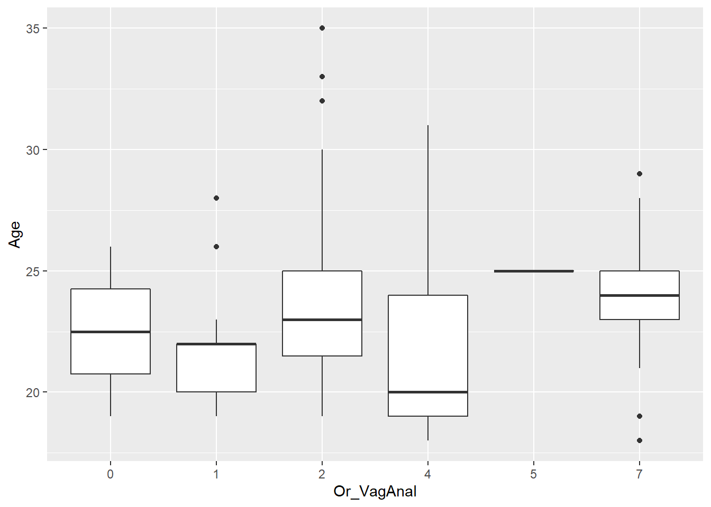
data %>%
ggplot()+
geom_count(aes(x = Or_VagAnal, y = CU_lastSex))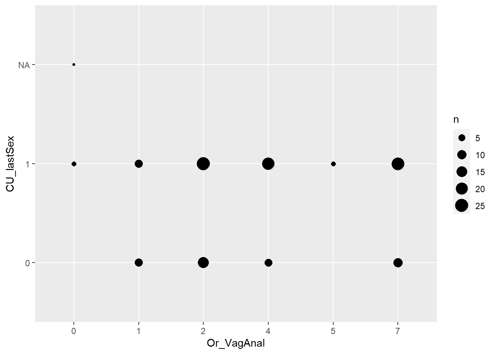
data %>%
count(Or_VagAnal, CU_lastSex) %>%
ggplot()+
geom_tile(aes(x = Or_VagAnal, y = CU_lastSex, fill = n))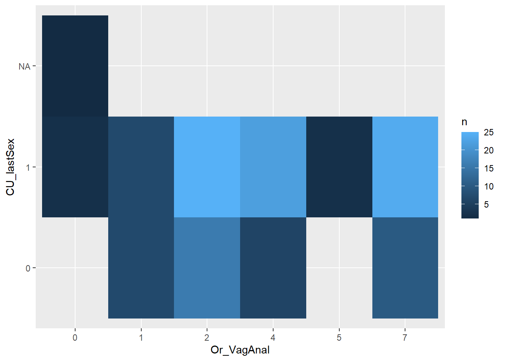
Warning: Removed 9 rows containing missing values (geom_point).Warning: Removed 9 row(s) containing missing values (geom_path).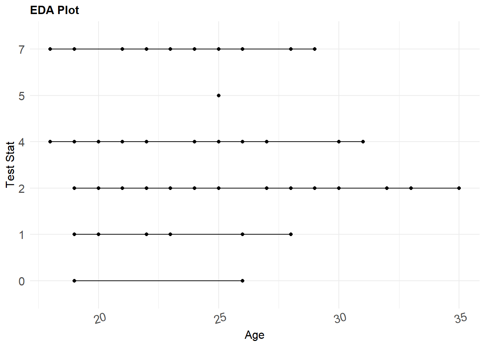